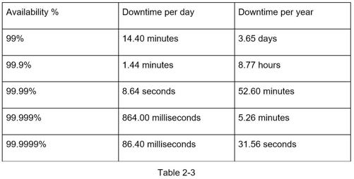

High availability is the ability of a system to be continuously operational for a desirably long period of time. High availability is measured as a percentage, with 100% means a service that has 0 downtime. Most services fall between 99% and 100%.
A service level agreement (SLA) is a commonly used term for service providers. This is an agreement between you (the service provider) and your customer, and this agreement formally defines the level of uptime your service will deliver. Cloud providers Amazon [4], Google [5] and Microsoft [6] set their SLAs at 99.9% or above. Uptime is traditionally measured in nines. The more the nines, the better. As shown in Table 2-3, the number of nines correlate to the expected system downtime.
